Historia Económica de Colombia · Historia familiar
El comercio fluvial formal e informal
en la Orinoquía a través del
RÍO META, 1940 a 1980
Estructura, dinámicas y desarrollo
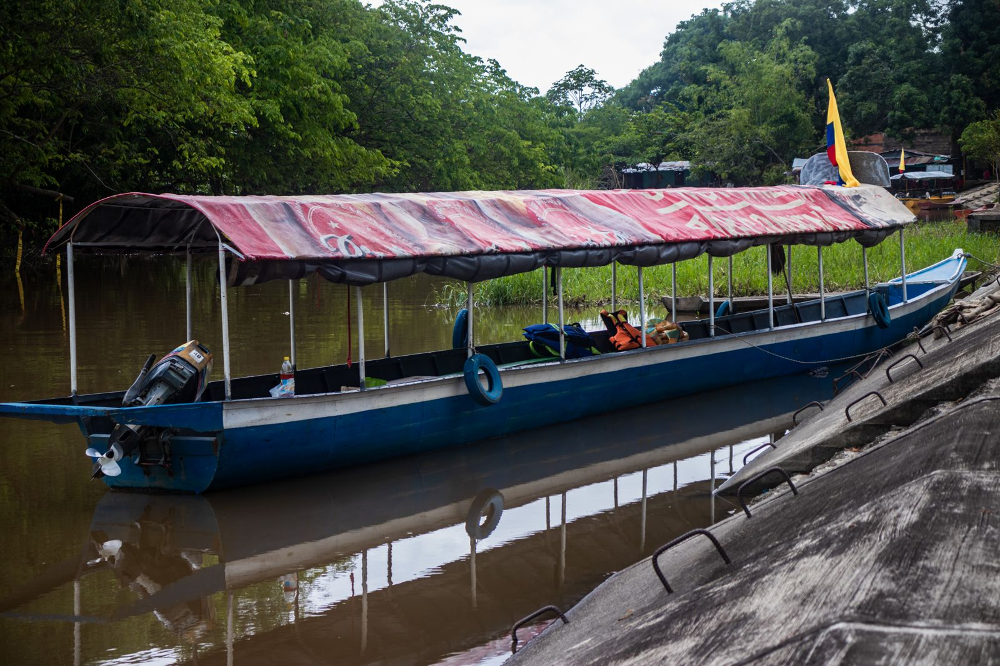
La navegación y el comercio del río Meta entre 1940 y 1980 a través del lente de Abel Rey, navegante y comerciante llanero.
Sarah Lucía Vivas · 2026-2
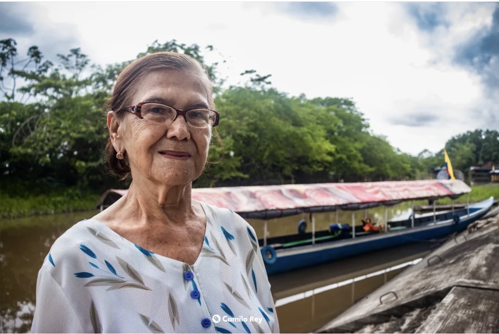
Abel y el río Meta
Abel Rey (1931–2022) fue navegante y comerciante informal en el río Meta durante toda su juventud y su vida adulta, con base en Puerto López. El oficio no venía de una tradición familiar, sino de la migración: sus padres y abuelos, liberales, habían sido desplazados por la violencia bipartidista hacia un corregimiento remoto cerca de Villavicencio. Allí, el 1 de mayo de 1935, su padre, también llamado Abel Rey, y Clemente Naranjo bautizaron el caserío como Puerto López, en honor al presidente liberal Alfonso López Pumarejo (Alcaldía de Puerto López, 2025).
En Puerto López, Abel dejó la primaria y empezó a navegar el Meta, llevando mercancía de los centros urbanos a las regiones más apartadas de la Orinoquía. Su comercio era informal y funcionaba de voz a voz, con los pueblos que visitaba y con conocidos que necesitaban transportar algo (Flor Alba Garzón, comunicación personal, 20 de septiembre de 2026). Nunca estuvo vinculado a la Compañía Nacional de Navegación (NAVENAL), la empresa estatal creada en 1944 (Ardila-Luna, 2022, p. 76).
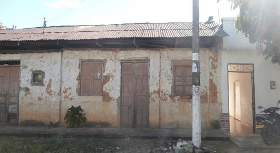
Cada año, en vísperas de Año Nuevo, Abel se reunía en Villavicencio con comerciantes y dueños de caseríos y haciendas del Meta lejano. Compraba mercancía al por mayor y anotaba los encargos. En febrero cargaba el bote y zarpaba de Puerto López en un viaje de unos seis meses, hasta Orocué, La Hermosa, Guachiría, el Cravo Norte, el Cravo Sur y a veces Venezuela, entregando pedidos en caseríos, resguardos indígenas y haciendas. Siempre llevaba en el bote un ataúd y un vestido de novia, porque “sabía que alguien de por allá lejos iba a necesitar uno” (Flor Alba Garzón, comunicación personal, 20 de septiembre de 2026).
Los viajes de Abel por el Río Meta llegaron a su fin en 1986. No fue una decisión repentina, Abel cada año trataba de llevar a sus hijos hombres a que aprendieran la vida en el río, pero desde alrededor de comienzos de los 80 decía que era más complicado, pues la guerrilla había empezado a pedirle “vacunas” por parar en los puertos y solían amenazarlo si no pagaba. Además, en 1986 falleció su hija menor, Nidia Rey, a los 14 años; este hecho lo hizo tomar la decisión de volver a casa del todo y no volver a navegar hasta su muerte en julio de 2022. (Flor Alba Garzón, comunicación personal, 4 de noviembre de 2026).
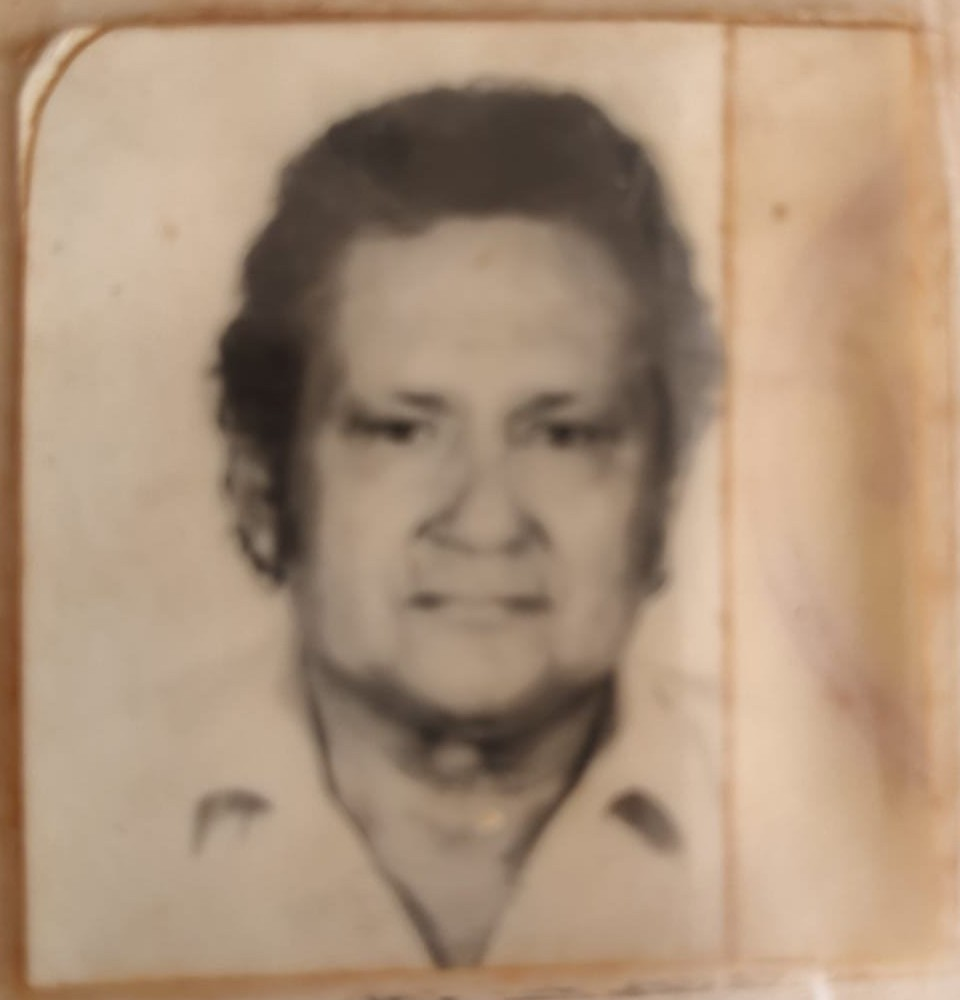
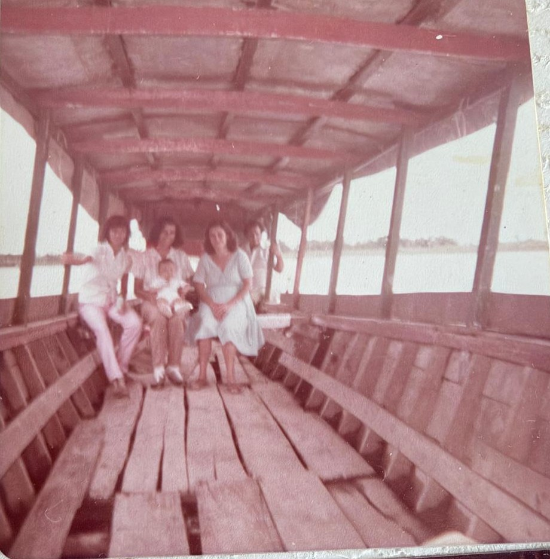
¿Por qué, a mediados del siglo XX, un ataúd o un vestido de novia solo llegaba a un caserío del Meta si alguien lo traía por el río?
Esta página web hace un recorrido para tratar de responder esa pregunta. La primera parte contextualiza cómo era Colombia en las décadas en que Abel navegó, cómo se pobló el Meta y cómo la violencia lo transformó, hasta llegar al río. La segunda recorre los pueblos navegantes, empezando por Puerto López. La tercera analiza la navegación misma: qué se comerciaba, quién lo hacía y cómo convivían el circuito formal del Estado, con NAVENAL, y el circuito informal de navegantes como Abel.
El recorrido · haga clic en cada parte
El río Meta
El río que atraviesa la región.
El río que atraviesa la región
El Meta nace en el piedemonte llanero. El Humadea y el Guayuriba se unen para formar el Metica, que pasa frente a Puerto López; río abajo, cerca de Cabuyaro, el Metica desemboca en el Humea y nace el Meta. Desde ahí corre hacia el nororiente hasta Puerto Carreño, en el Vichada, donde desemboca en el Orinoco (Ardila Luna, 2018, p. 24). Contando el Metica, recorre unos mil kilómetros. Su cuenca abarca cerca del 9% del territorio nacional, se reparte entre el Meta, el Casanare, Arauca y el Vichada, y comparte 200 kilómetros de frontera con Venezuela (p. 24).
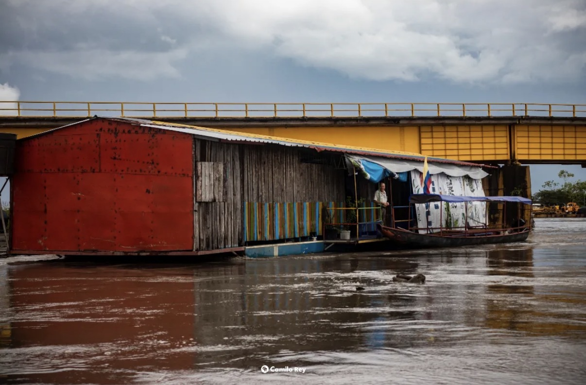
El flujo y la vida del comerciante en el Meta la determina un ciclo de dos estaciones. En invierno, de marzo a noviembre, las lluvias suben el nivel del río, inundan las sabanas y abren la temporada de navegación comercial. En verano, de diciembre a febrero, “las lagunas, caños, esteros y morichales disminuyen su tamaño” y el río toma una forma trenzada al correr el agua entre islas y bancos de arena (Ardila Luna, 2018, p. 24). El Río Meta es navegable 8 meses al año durante la época de lluvias y esto ha determinado las dinámicas de indígenas, llaneros y colonos históricamente; el uso de uno u otro puerto dependía de la estación y mes del año, “durante el invierno era posible llegar hasta Puerto López y cuando el nivel del agua bajaba llegaban hasta Cabuyaro donde pasaban embarcaciones más pequeñas” (Ardila Luna, 2018, p. 31). El calendario de Abel seguía ese ciclo. Compraba la mercancía y recogía los encargos en Villavicencio a fin de año y zarpaba en febrero, justo antes de que las lluvias subieran el río, para viajar unos seis meses con las aguas altas (Flor Alba Garzón, comunicación personal, 20 de septiembre de 2026).
Mapa interactivo: el río de Abel, de Puerto López a Puerto Carreño
El mapa muestra los puertos del Meta y las paradas del recorrido de Abel. Al tocar cada punto aparece su papel en el comercio del río: Villavicencio como mercado, Puerto López como base, y río abajo los pueblos y haciendas que Abel abastecía hasta la frontera con Venezuela.
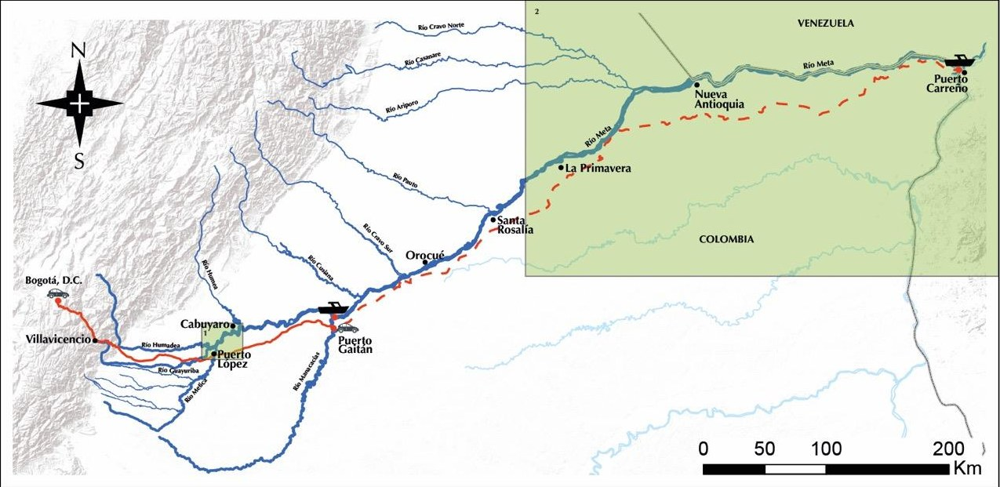
Puerto de zarpar de Abel Rey. Puerto sobre el río Metica, el punto navegable más alto y más cercano a Bogotá (Ardila Luna, 2018, p. 130).
40 años de historia colombiana y llanera
Colombia y el Meta entre el nacimiento de Abel, en 1931, y el fin de sus viajes, en 1986.
Los viajes de mi abuelo atravesaron décadas que transformaron a Colombia. Entre su nacimiento en 1931 y el fin de sus viajes en 1986 el país: dejó atrás la economía cafetera abierta de los años veinte y construyó un Estado que intervenía en el comercio, el crédito y el transporte (Ocampo, 2023, p. 22); atravesó una ola de violencia política y vivió al ritmo del precio del café, que marcaba las bonanzas y las crisis (Caballero y Urrutia, 2005, p. 17). Los años en los que Abel navegó el Meta fueron más estables que décadas anteriores, pero aún así estuvieron definidos por los ciclos resultantes en las fluctuaciones del café (ver Figura 1). Los Llanos, mientras tanto, seguían siendo parte de los Territorios Nacionales - regiones apartadas, extensas y poco pobladas cuya política pública se regía bajo regímenes administrativos especiales - y representaban más de la mitad del país, con índices de población y productividad muy bajos (Jara Moreno, 2007, p. 38).
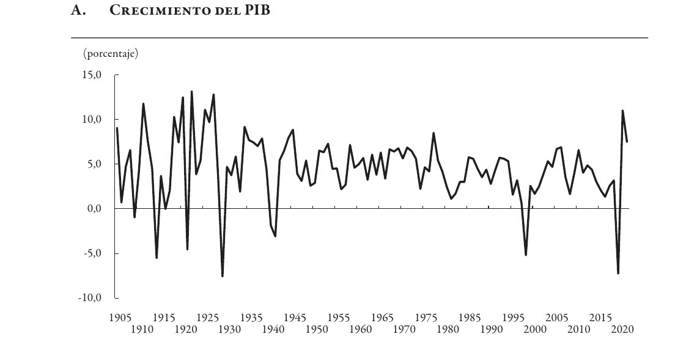
Haga clic en cada década para abrirla
Antes de 1940La prosperidad al debe y la crisis+
Colombia
En los años veinte, debido inicialmente al Tratado por la venta de Panamá, un gobierno colombiano tuvo acceso amplio al crédito externo y lo dedicó sobre todo a obras públicas y transporte. En 1928 López Pumarejo bautizó ese auge como la “prosperidad a debe” (Caballero y Urrutia, 2005, pp. 8–9). Con la Gran Depresión, no obstante, el acceso al crédito se debilitó y el gobierno tuvo que recurrir a recortes en la inversión, que llevaron incluso a la parálisis completa de obras públicas a comienzos de 1931 (Ocampo, 2023, p. 16). La economía se reactivó desde 1932, con un crecimiento especialmente rápido de la manufactura (p. 20), y la reforma tributaria de 1935 redujo la dependencia del gobierno de los impuestos de aduana, permitiéndole suavizar los choques en los ciclos del café (p. 21).
El Meta
En el Meta, las leyes de colonización y baldíos de comienzos de siglo habían tenido poco alcance en los Llanos pues la inversión se dirigía sobre todo a las regiones centrales (Jara Moreno, 2007, p. 39). Además, la crisis derivada de la Gran Depresión golpeó fuertemente a la región: los auxilios nacionales a los Territorios Nacionales cayeron de 782.790 pesos en 1928 a 213.451 en 1933 (p. 41). El gobierno de López Pumarejo cambió el panorama, pues hizo del desarrollo de la Intendencia del Meta una de las piezas centrales de su política territorial (Jara Moreno, 2007, p. 39). En su mandato se fundó Puerto López, el 1 de mayo de 1935, por Abel Rey (padre) y Clemente Naranjo (Alcaldía de Puerto López, 2025), y en 1936 se abrió la carretera Bogotá–Villavicencio. En 1937 se inauguró también una flotilla postal con naves a motor en Puerto López (Esquivel Triana, 2002, p. 67).
1940sLa guerra y el Estado que interviene+
Colombia
En el país la Segunda Guerra Mundial abatió la exportación de café al generar el cierre de los mercados europeos del grano en 1940 y provocó una nueva recesión. El país salió de ella gracias al Acuerdo Interamericano de Café y a la renegociación de la deuda con Estados Unidos (Ocampo, 2023, p. 21). Ese año se creó el Fondo Nacional del Café, y con las importaciones racionadas por la guerra Colombia acumuló una cantidad histórica de reservas (p. 21). El Estado, además, empezó a asumir funciones nuevas: en 1940 nació el Instituto de Fomento Industrial (p. 22), y en 1944, en el segundo gobierno de López Pumarejo, la Compañía Nacional de Navegación, NAVENAL, creada para integrar por río las regiones de frontera (Ardila Luna, 2018, p. 109).
El Meta
El Meta también crecía, o mejor dicho, se construía. Los recursos fiscales de los Territorios Nacionales pasaron de 706.405 pesos en 1934 a 2.647.736 en 1943 (Jara Moreno, 2007, p. 42), y la colonización estatal pasó por la Caja Agraria en 1944 y por el Instituto de Parcelaciones en 1946 (Esquivel Triana, 2002, p. 68). La región era atractiva para los colonos liberales, muchos habían llegado desde la Guerra de los Mil Días como la familia de Abel (Ospina Ovalle, 2021, p. 57; Flor Alba Garzón, comunicación personal, 20 de septiembre de 2026). El Meta era por tanto liberal y gaitanista: en 1947 la lista de Gaitán fue la más votada en San Martín y en corregimientos como Yacuana (Puerto López) y Cabuyaro (Jara Moreno, 2007, p. 43). No obstante, los corregimientos no podían elegir sus propias autoridades, y la Intendencia no tenía representantes propios en el Congreso (pp. 45, 48). En esa década también llegaron los primeros medios de transporte modernos: las aerolíneas que volaban a los Llanos desde 1945 y, en 1948, los primeros buques de NAVENAL en el Meta (Alvear Sanín, 2008, p. 258; Ardila Luna, 2018, p. 109).
1950sLa Violencia y el café+
Colombia
Según Mazzuca y Robinson (2006), la paz que se vivió en Colombia desde 1905 se debió a reglas electorales que repartían el poder entre los dos partidos y que abrieron cuatro décadas de estabilidad política (2006, pp. 4, 10). No obstante, ese arreglo se rompió con el asesinato de Gaitán el 9 de abril de 1948 (Ospina Ovalle, 2021, p. 37). En noviembre de 1949 se declaró el estado de sitio y se suspendió el Congreso. Después llegaron Rojas Pinilla, en 1953, y la Junta Militar, entre 1957 y 1958 (Caballero y Urrutia, 2005, p. 19). Mientras tanto, la economía seguía rigiéndose por las fluctuaciones del café: la libra llegó a 0,80 dólares en 1954, el país creció 6,5% anual entre 1953 y 1955 y la industria se expandió con la sustitución de importaciones (Caballero y Urrutia, 2005, p. 17; Caballero y Esguerra, 2023, p. 88). La reforma financiera de 1951 creó bancos estatales de fomento, entre ellos el Banco Ganadero, en 1956 (Ocampo, 2023, p. 22). Cuando el precio del café cayó en 1955 vino la crisis externa más fuerte del periodo, que terminó en la devaluación más grande de la historia colombiana (p. 26).
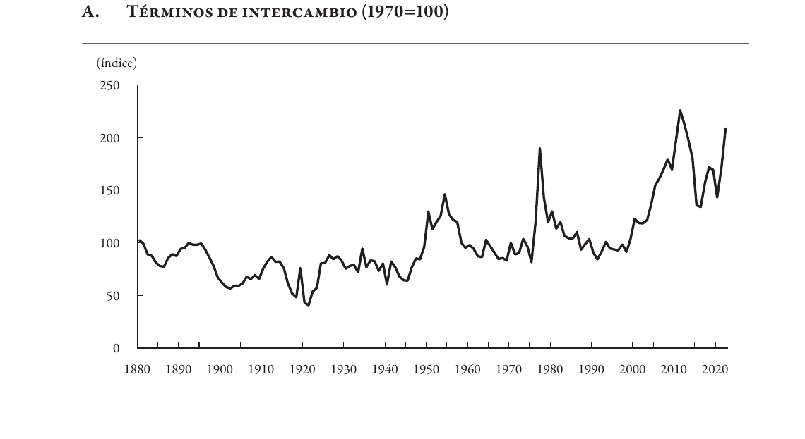
El Meta
La época de la Violencia azotó a Puerto López desde el primer día: el 9 de abril de 1948 hubo allí levantamientos gaitanistas dirigidos por Eliseo Velásquez (Esquivel Triana, 2002, p. 72). Entre 1949 y 1953 los Llanos fueron escenario de las guerrillas liberales, en una región donde las distancias y la falta de vías dejaban al gobierno muy poca influencia (Ospina Ovalle, 2021, p. 153). Las guerrillas llegaron a proponer su propio orden territorial llamado las Leyes del Llano, cuyo orden político funcionaba a través de juntas de vereda elegidas entre los vecinos (Jara Moreno, 2007, p. 48). La guerra también llegó al río: desde 1952 la Armada instaló apostaderos en Puerto López, Orocué y Puerto Carreño (Esquivel Triana, 2002, p. 68). Pese a la guerra, la población del Meta creció más rápido que nunca después de 1951 y en 1955 Puerto López fue erigido municipio (Ardila Luna, 2018, p. 131).
1960sEl Frente Nacional y la ganadería+
Colombia
El Frente Nacional restableció el reparto del poder entre los partidos y terminó el periodo de la Violencia. La economía, no obstante, seguía atrapada en ciclos de “siga y pare”: se expandía cuando el café tenía un boom y se ajustaba cuando el precio caía (Ocampo, 2023, p. 22). Lleras Camargo aumentó el gasto público entre 1959 y 1961, y una nueva crisis obligó a devaluar a 9 pesos por dólar en 1962 (p. 27). El gobierno vigilaba que se cumplieran las inversiones de la Ley 26 de 1959 de fomento agrícola y ganadero, y el Banco de la República le prestaba para “la pacificación del país” (Caballero y Esguerra, 2023, p. 105). La estabilidad llegó con el Decreto-Ley 444 de 1967, que unificó los tipos de cambio y creó un régimen estable de promoción de exportaciones (Ocampo, 2023, p. 28).
El Meta
Terminado el mandato de Rojas Pinilla, el Meta obtuvo la categoría de departamento (Jara Moreno, 2007, p. 47). Para 1964 los Llanos tenían apenas el 1,5% de la población nacional (Esquivel Triana, 2002, p. 62), pero el Meta ya era el departamento más poblado de la región. Su economía seguía basada en la ganadería extensiva y la agricultura de subsistencia (p. 59), que era justo el sector que el Estado buscaba financiar con el Banco Ganadero y otras medidas de incentivos. En esa década aumentó el transporte de ganado por el río Meta hasta Puerto López, desde donde seguía en camión hacia Bogotá (Ardila Luna, 2018, p. 47).
1970sCrecimiento, bonanza y los Llanos como una nueva frontera+
Colombia
Las medidas del Decreto 444 pusieron fin a las crisis recurrentes de balanza de pagos e iniciaron uno de los periodos de crecimiento más dinámicos de la historia del país (Ocampo, 2023, p. 28). Las exportaciones no tradicionales pasaron del 15% del total en 1966 a más del 40% en 1974, y desde comienzos de la década Colombia volvió a tener acceso al crédito privado externo (p. 28). A mediados de 1975 empezó una nueva bonanza cafetera que fue controlada con política contracíclica por el gobierno de López Michelsen que implementó un ajuste fiscal y controles para controlar el exceso de divisas (p. 29). Desde 1978, el gobierno de Turbay Ayala cambió las medidas e implementó un plan masivo de inversión pública financiado con crédito externo (p. 29).
El Meta
En los setenta los Llanos se convirtieron en una nueva frontera económica. Se hallaron importantes yacimientos de petróleo y la investigación científica empezó a mostrar que los suelos podrían producir cantidades a escala industrial (Ardila Luna, 2018, p. 57). Con las exploraciones petroleras y el auge de la coca empezó una nueva ola de colonización (p. 39). Hubo también intentos de cultivos comerciales, como la caña de azúcar y el algodón, que en algunos casos se perdieron por las sequías (p. 140). En la misma década el BID financió la ampliación de la carretera Villavicencio–Puerto López (Alvear Sanín, 2008, p. 399).
1980sCrisis de la deuda y un Llano en disputa+
Colombia
El auge de gasto y crédito externo de Turbay coincidió con una caída de los precios internacionales, y la economía se desaceleró hasta crecer apenas 1,1% en 1982 (Ocampo, 2023, p. 31). El gobierno de Belisario Betancur heredó una economía casi paralizada, con altos déficits fiscal y externo, una crisis financiera que estalló en 1982 y el comienzo de la crisis latinoamericana de la deuda (p. 31).
El Meta
En 1985 el Ministerio de Obras Públicas encargó un proyecto para recuperar la navegabilidad del Meta (Ardila Luna, 2018, p. 57). Al mismo tiempo, el Llano se volvió territorio en disputa. Con el auge de la coca llegaron narcotraficantes que se apropiaron de grandes extensiones de tierra en pueblos ribereños como Santa Rosalía (p. 46), y la guerrilla empezó a cobrar “vacunas” a quienes transportaban mercancías por el río (p. 50). En medio de esa crisis se cerraron los dos circuitos del río. NAVENAL, que había decidido liquidarse en 1982, fue liquidada en 1984 (pp. 109, 155), y muchos comerciantes informales abandonaron sus botes, como Abel quien dejó de navegar en 1986.
El Meta: un territorio fragmentado
El río, la carretera y la apuesta del Estado.
El comercio fluvial a través del Río Meta respondía a la baja conexión de comunidades llaneras que necesitaban suplir sus necesidades. Esta fragmentación geográfica fue un proceso que empezó desde la Colonia, donde regiones de Colombia permanecieron aisladas entre sí por la geografía y debilidad de las comunicaciones, lo cual delimitó las dinámicas económicas interregionales al encarecer los bienes gracias a los altos costos de transporte (Safford y Palacios, 2002, p. 39). Los Llanos quedaron del otro lado de la cordillera Oriental, más cerca de Venezuela que de Bogotá: desde Arauca se llegaba a Ciudad Bolívar en doce días por río, y a Bogotá en treinta (Esquivel Triana, 2002, p. 72). Ese aislamiento impedía que la región llanera se integrara a la economía nacional (p. 69). No obstante, cada nuevo medio de transporte abarató el viaje, acercó el Meta al resto del país y cambió las dinámicas de abastecimiento dentro y fuera del río.
A pie y en planchón
El llanero arreaba el ganado de Arauca a Villavicencio; para cruzar los ríos lo pasaba en planchones.
Esquivel Triana (2002, pp. 63, 67)
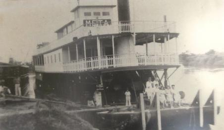
Río · 1937 y 1948
Flotilla a motor en Puerto López (1937). NAVENAL llega al Meta (1948).
Esquivel Triana (2002, p. 67); Ardila Luna (2018, p. 142)
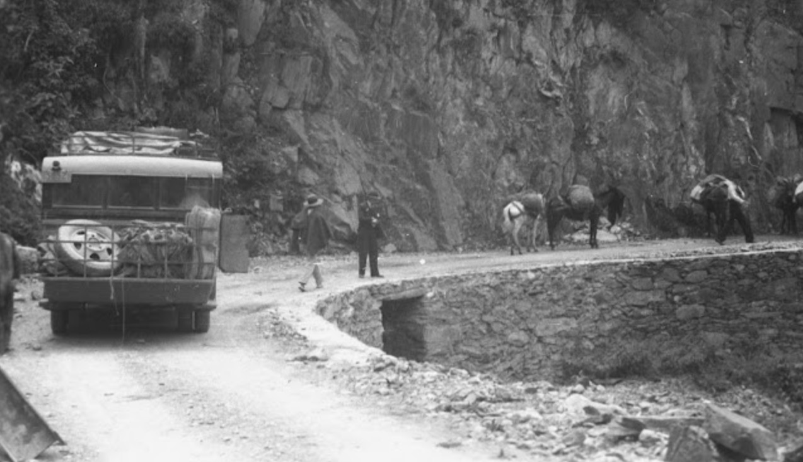
Carretera · 1936
Bogotá–Villavicencio: de 8 días a unas 4 horas y media.
Esquivel Triana (2002, p. 67)
Avión · 1949
De Bogotá a Apiay en los DC-3 de Avianca.
Esquivel Triana (2002, p. 68)
El río, la carretera y la apuesta del Estado
Antes de 1944, el comercio del Llano pasaba por el río en botes de particulares, con trayectos cortos y limitados. Durante los primeros años de Abel como navegante su comercio incluía llevarle arroz a los caseríos y otros granos secos; además de bienes como ropa, medicina y otros consumibles que las comunidades no pudieran suplir por si solas (Flor Alba Garzón, comunicación personal, 20 de septiembre de 2026).
En 1944, el panorama cambió: el Estado decidió hacerse cargo de la navegación. López Pumarejo creó la Compañía Nacional de Navegación, NAVENAL, con el objetivo de “fomentar y regular la navegación fluvial” para ayudar a la colonización e incorporar al territorio nacional las regiones de frontera (Ardila Luna, 2018, pp. 109, 142). La NAVENAL llegó al Meta en 1948 con un vapor traído del Magdalena y armado en Puerto López, y con él empezó lo que Ardila llama “la época dorada de la navegación” (Ardila Luna, 2018, pp. 31, 142). Llegó a tener ocho embarcaciones y llevaba ganado, pasajeros y sal para los ganaderos, en un convenio con el IDEMA (p. 109). Durante esa época, Abel mantuvo principalmente su comercio con caseríos y pequeñas haciendas a las cuales la NAVENAL no suplía (Flor Alba Garzón, comunicación personal, 20 de septiembre de 2026).
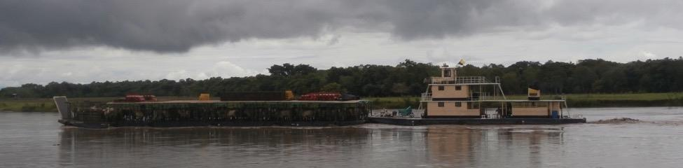
NAVENAL en el Meta
Fuente: elaboración propia con datos de Ardila Luna (2018, pp. 109, 142, 155).
Mientras el Estado apostaba por el río en el Meta, el resto del país se pasaba a la carretera. Entre 1932 y 1948 la red nacional casi se cuadruplicó, de 3.006 a 11.607 kilómetros, aunque en 1947 los ríos todavía movían más de una cuarta parte de la carga del país (Alvear Sanín, 2008, tablas 35 y 38). La carretera Bogotá–Villavicencio, abierta en 1936, redujo el viaje de ocho días a unas cuatro horas y media (Esquivel Triana, 2002, p. 67), pero no pasaba del piedemonte. En 1944, ir de Villavicencio a Puerto López tomaba tres horas en verano y hasta doce en lluvias (p. 67), y en 1960 el Meta tenía apenas el 0,8% de los vehículos del país (Alvear Sanín, 2008, Tabla 40).
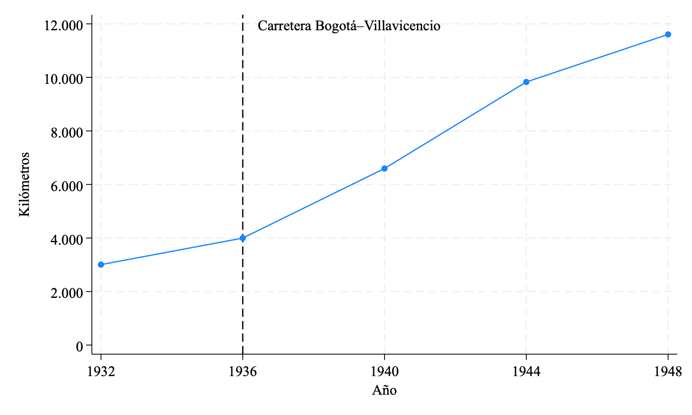
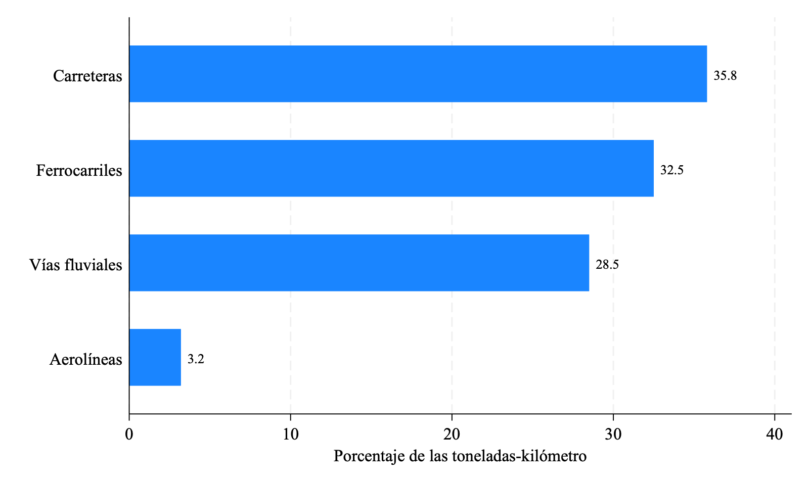
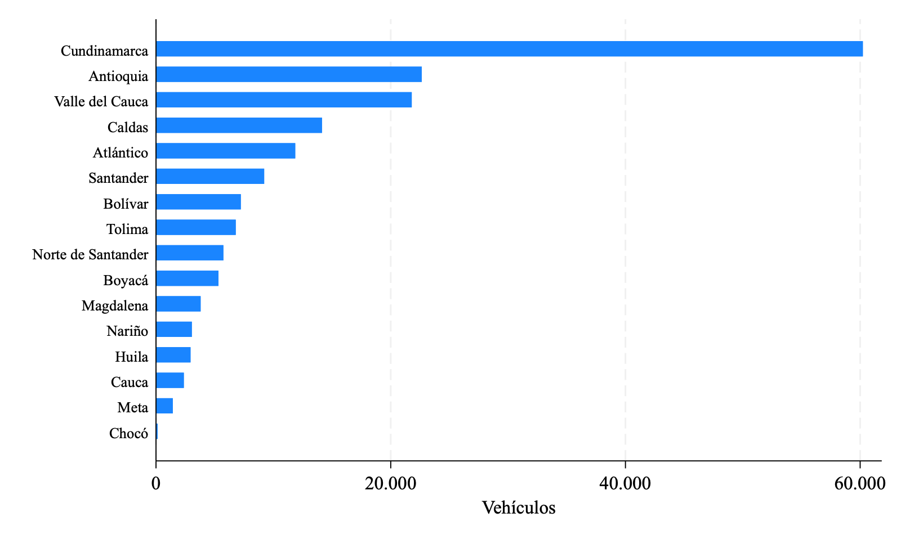
Tiempos de viaje en los Llanos
Cuánto tomaba moverse por el Meta y hacia el centro del país, según el medio de transporte.
| Trayecto | Medio | Tiempo | Año |
|---|---|---|---|
| Arauca → Villavicencio | Ganado arreado a pie | 40 días | 1ª mitad s. XX |
| Arauca → Bogotá | — | 30 días | 1ª mitad s. XX |
| Arauca → Ciudad Bolívar (Venezuela) | Río | 12 días | 1ª mitad s. XX |
| Bogotá → Villavicencio | Camino, antes de la carretera | 8 días | Antes de 1936 |
| Bogotá → Villavicencio | Carretera | 4 h 35 min | 1936–1937 |
| Bogotá → Villavicencio | Carretera | 6 horas | 1949 |
| Villavicencio → Puerto López | Carretera | 3 h verano 12 h lluvias | 1944 |
| Bogotá → Apiay (Villavicencio) | Avión DC-3 | 45 minutos | 1949 |
| Puerto López → Orocué, Cravo Norte y más allá | Bote de Abel Rey | ≈ 6 meses* | 1950–1980 |
Fuente: Tabla de elaboración propia. Datos: Esquivel Triana (2002, pp. 63, 67, 68, 72) y Flor Alba Garzón (comunicación personal, 20 de septiembre de 2026). *Recorrido completo con entregas en cada parada, no un trayecto directo. Las cifras provienen de fuentes de distintos años y se presentan como órdenes de magnitud.
En los años sesenta el río y la carretera empezaron a encontrarse. El ganado bajaba por el río hasta Puerto López, engordaba unas semanas y seguía en camión hacia Bogotá (Ardila Luna, 2018, p. 47). En 1968 se construyó el puente Carlos Lleras sobre el Metica (p. 144), y en los setenta el BID financió la ampliación de la carretera hasta Puerto López (Alvear Sanín, 2008, p. 399). Abel, siguió haciendo el viaje, pero las mercancías que empezaban a llegar por tierra acortaron sus recorridos y cambiaron lo que le pedían en los caseríos (Flor Alba Garzón, comunicación personal, 4 de noviembre de 2026).
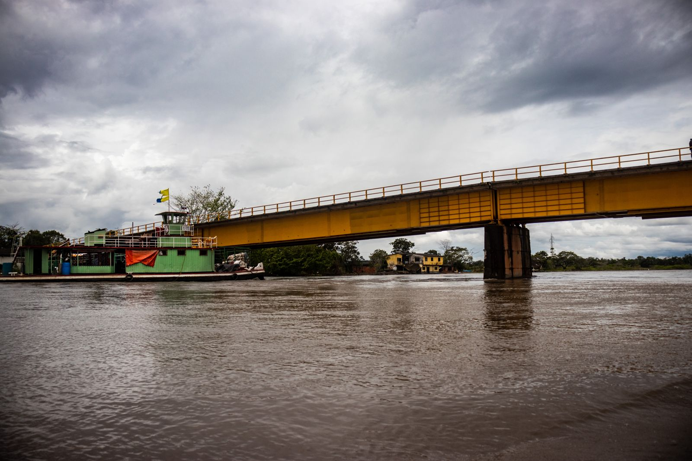
La guerra, sin embargo, también llegó al río. Primero, en los cincuenta, con las guerrillas en las orillas y las lanchas blindadas de la Armada (Esquivel Triana, 2002, p. 68); después, con las “vacunas” que cobraba la guerrilla a los transportadores (Ardila Luna, 2018, p. 50). Las tarifas subsidiadas tampoco se sostuvieron. Durante esa época, Abel trató de perseverar pero hubo varios años en los que la situación se ponía tan tensa en el río que optaba por ir periodos más cortos de tiempo o incluso saltarse una temporada y “sostenerse con lo ahorrado” (Flor Alba Garzón, comunicación personal, 20 de septiembre de 2026).
En 1982 la junta directiva decidió liquidar la empresa por haber perdido más de la mitad de su patrimonio, y en 1984 NAVENAL desapareció (Ardila Luna, 2018, pp. 109, 155). Su propósito de integrar el territorio sobrevivió en el papel: el decreto que ese mismo año reorganizó la navegación estatal seguía hablando de apoyar la colonización y el comercio. Pero el Estado que podía financiarlo ya no existía.
Al final, la integración que el Estado buscó por el río llegó por tierra. Cuando los pueblos empezaron a recibir por carretera lo que antes solo llegaba en bote, el navegante que llevaba de todo dejó de ser indispensable. Además, la violencia en las aguas no cesó y dos años después de la liquidación de NAVENAL, en 1986, Abel dejó de navegar.
Pueblos navegantes y poblamiento del Meta
Un territorio que se llenó de colonos.
El Meta se pobló en oleadas. La primera bajó en las décadas de 1910 y 1920 desde Cáqueza y Quetame, en la cordillera, y abrió en el piedemonte los primeros cultivos de arroz. La segunda llegó con la carretera a Villavicencio en 1936. La tercera la trajo la Violencia, con colonos del Tolima y del Viejo Caldas que fueron desmontando tierras hacia San Martín, Granada y las orillas del río cerca de Puerto López (Esquivel Triana, 2002, p. 65). Llegaron también liberales perseguidos, muchos desde la Guerra de los Mil Días, como la familia de Abel (Ospina Ovalle, 2021, p. 57). El Meta pasó de 51.674 habitantes en 1938 a 165.530 en 1964. (Censos de Población de 1938, 1951 y 1964).
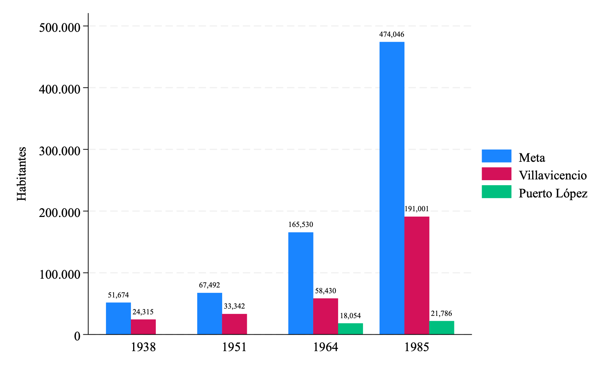
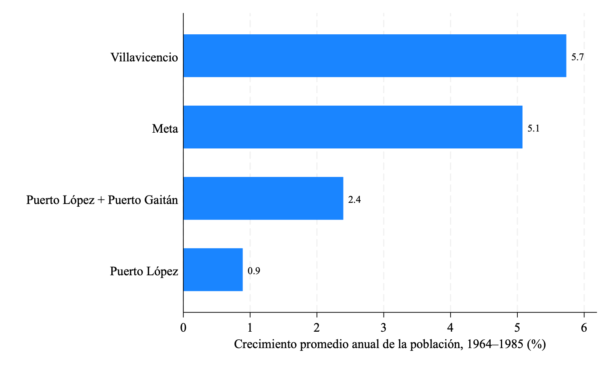
Puerto López
Puerto López se fundó donde el caño Banderas cae al Metica. Era el punto navegable más alto del río y el más cercano a Bogotá (Ardila Luna, 2018, p. 130). Hacia 1938 era un pueblo de hombres: unos 800, frente a 50 mujeres, en unas 50 casas. En 1944 ya tenía 100 casas, y desde allí se enviaban a Villavicencio y Bogotá unas 100.000 arrobas de arroz, además de plátano y yuca (Esquivel Triana, 2002, p. 65). Sus colonos fundadores empezaron cuidando ganado y cultivando conucos, pero pronto los hombres se volcaron a la navegación y la pesca. La mayoría de sus casas de bahareque eran bodegas y tiendas del comercio por el río (Ardila Luna, 2018, p. 131). En 1964 Puerto López ya era el segundo municipio del Meta, con 18.054 habitantes. (Censo de Población de 1964).
Puerto López en cifras, 1938–1985
| Año | Dato | Fuente |
|---|---|---|
| 1938 | Unos 800 hombres, 50 mujeres y 50 casas | Esquivel Triana (2002, p. 65) |
| 1944 | 100 casas; 800 habitantes urbanos y 400 rurales | Esquivel Triana (2002, p. 65) |
| 1944 | Envía 100.000 arrobas de arroz a Villavicencio y Bogotá | Esquivel Triana (2002, p. 65) |
| 1955 | Se erige como municipio | Ardila Luna (2018, p. 131) |
| 1964 | 18.054 habitantes; segundo municipio del Meta | Censo de 1964, Cuadro 5 |
| 1964 | 80% vive en el área rural | Censo de 1964, Cuadro 5 |
| 1964 | 123 hombres por cada 100 mujeres | Censo de 1964, Cuadro 5 |
| 1969 | Puerto Gaitán, hasta entonces inspección de Puerto López, se erige como municipio | Asamblea del Meta, 29 de noviembre de 1969 |
| 1985 | 21.786 habitantes; pasa del 10,9% al 4,6% de la población del Meta | Censo de 1985 con ajuste de cobertura, p. 58 |
| 1964–1985 | Crece 0,9% anual (2,4% sumando Puerto Gaitán), frente a 5,1% del Meta y 5,7% de Villavicencio | Cálculo propio con los censos de 1964 y 1985 |
Fuente: Tabla de elaboración propia.
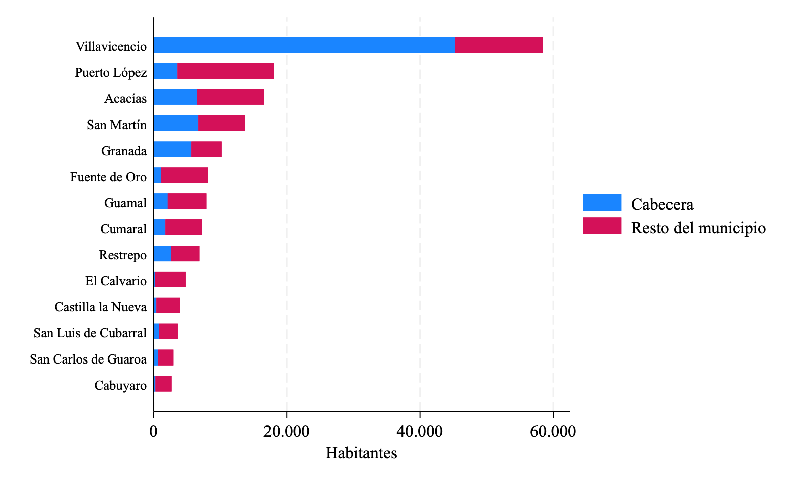
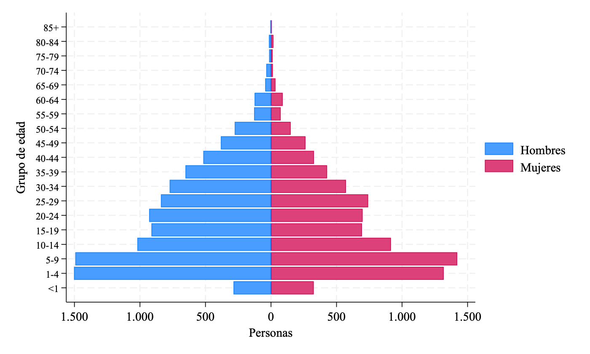
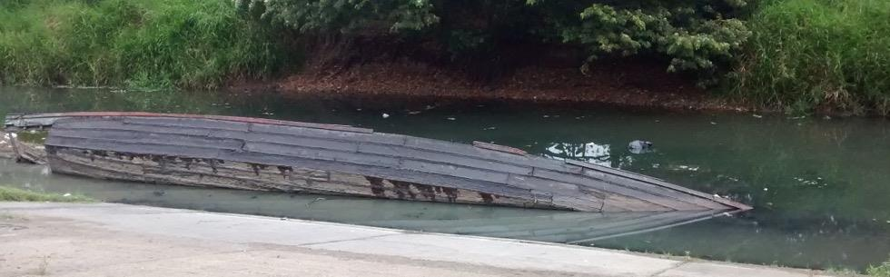
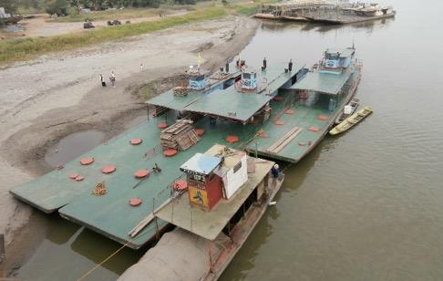
El río que hizo a Puerto López también empezó a irse. En 1975, El Tiempo publicó un artículo titulado “¡Puerto López se está quedando sin río!”. La sedimentación, visible desde 1969, había alejado el cauce del pueblo (Ardila Luna, 2018, p. 135), y el puerto de carga tuvo que trasladarse (p. 147).
Los otros pueblos del río
Cabuyaro
El antiguo Puerto Barrigón era el puerto de verano: cuando bajaba el agua, la carga llegaba hasta aquí y seguía en embarcaciones más pequeñas (Ardila Luna, 2018, p. 31). En 1964 tenía 2.695 habitantes, el 90% en el campo (Censo de Población de 1964).
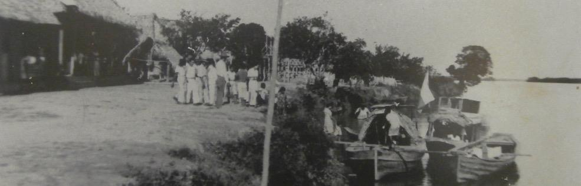
Orocué
Fue una de las paradas de Abel y uno de los puertos históricos del Meta. Su población llegó a depender del comercio por el río para abastecerse, y en los años setenta el pueblo vivió una crisis que generó una migración masiva dejándolo casi vacío (Ardila Luna, 2018, p. 204).
Foto: Casa de la Playa en Orocué, 1921. Fondo FAFO (Ardila Luna, 2018, p. 197, Imagen 30).
Puerto Carreño
Aquí el Meta desemboca en el Orinoco y empieza Venezuela, donde a veces llegaba Abel. Desde la Colonia hubo un contrabando activo entre el Orinoco y el Meta (Ardila Luna, 2018, p. 51), y a mediados de siglo el pueblo solo tenía conexión por carretera con Villavicencio en verano (Esquivel Triana, 2002, p. 60).
Conclusiones
Para mediados del Siglo XX los Llanos habían quedado por fuera de la integración del país: la nación había crecido alrededor del café, de las ciudades andinas y de las vías hacia los puertos de exportación. Los Llanos siguieron siendo una frontera ganadera, aislada por la geografía y casi sin carreteras: en 1960 el Meta tenía el 0,8% de los vehículos del país. Aquel vacío lo suplió el río, la única vía que interconectaba las regiones dispersas en los llanos y por la cual en algún punto llegaron a circular dos comercios. NAVENAL, el circuito del Estado, llevaba la sal y los insumos que necesitaba la ganadería. Navegantes como Abel, el circuito informal, llevaban lo que necesitaban los caseríos y comunidades alejadas, por voz a voz.
La historia del río resume en una región varios de los temas del curso. La fragmentación geográfica que describen Safford y Palacios (2002) seguía viva en el siglo XX. La ruptura del reparto del poder que estudian Mazzuca y Robinson (2006) empujó a los liberales hacia el Llano y convirtió el río en escenario de guerra en distintos momentos. El Estado que intervino en la economía después de 1930 (Ocampo, 2023) y que llegó al río con NAVENAL, con las salinas del Banco de la República y con los créditos a la ganadería, para luego retirarse en 1984. Y, finalmente, cuando a finales de los sesenta y en los setenta la carretera conectó por fin a Puerto López durante todo el año, con el puente Carlos Lleras (1968) y la ampliación financiada por el BID, donde el navegante que llevaba de todo fue empezando a ser dispensable.
La vida de Abel, mi abuelo, cubre casi exactamente ese ciclo. Empezó a navegar cuando el Estado volvía a mirar el río. Vio cómo la carretera le acortaba los viajes y cambiaba lo que le pedían. Se retiró en 1986, dos años después de que desapareciera NAVENAL, por la violencia y por la muerte de su hija Nidia. Para la gente de Puerto López, el tiempo en que “se podía vivir del río” terminó a finales de los ochenta (Ardila Luna, 2018, p. 137). La historia de Abel muestra el desarrollo del río que mantuvo unido al llano desde antes de la presencia real del Estado y deja ver cómo se sostuvo una región lejana a la integración del país pero conectada por su propia gente y sus aguas.
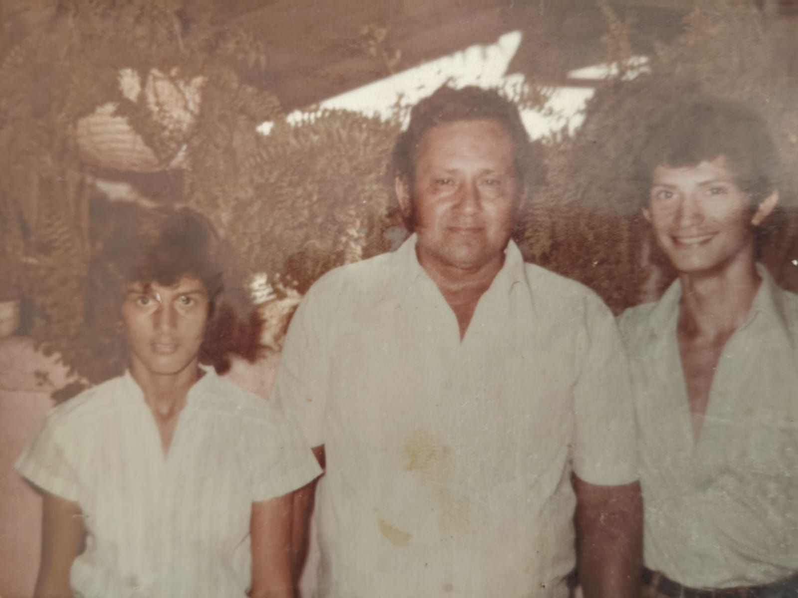
Fuentes y datos
De dónde viene la información y cómo se trabajó.
Fuentes familiares
Mi abuelo falleció en 2022, así que su experiencia se reconstruye de forma indirecta. La fuente principal son dos entrevistas a Flor Alba Garzón, su esposa (20 de septiembre y 4 de noviembre de 2026), complementadas con fotografías del archivo familiar y fotografías actuales del río tomadas por mi primo, Camilo Rey. Los testimonios orales tienen límites claros para fechar y ubicar los hechos, por eso los uso sobre todo para describir las dinámicas del comercio, las temporadas de viaje, los clientes y las mercancías, y los contrasto con la literatura y los datos.
Datos
| Serie | Origen | Variables | Cobertura | Tratamiento |
|---|---|---|---|---|
| Población del Meta y municipios | Censos de Población 1938 (Tomo XVI), 1951 y 1964 (Resumen del Meta), Contraloría y DANE; Censo de 1985, población con ajuste final de cobertura (DANE) | Población total, cabecera y resto; sexo; grupos de edad (1964) | Intendencia/Departamento del Meta y sus municipios | Transcripción propia de los cuadros escaneados; verificación de que los municipios sumen el total departamental; tasas de crecimiento geométrico entre fechas censales. La cifra de 1985 incluye el ajuste de cobertura del DANE; para comparar Puerto López con 1964 se suma Puerto Gaitán, que formaba parte de su territorio |
| Carreteras nacionales | Alvear Sanín (2008), Tabla 35 (Barnhart) | Kilómetros | Nacional, 1932–1948, cada 4 años | Transcripción |
| Carga por modo | Alvear Sanín (2008), Tabla 38 (misión Currie) | Ton-km y porcentaje | Nacional, 1947 | Transcripción |
| Parque automotor | Alvear Sanín (2008), Tabla 40 (Anuario General de Estadística) | Vehículos | Departamentos, 1960 | Transcripción |
| Tiempos de viaje | Esquivel Triana (2002); entrevista familiar | Trayecto, medio, duración, año | Llanos Orientales, 1930–1980 | Compilación propia de datos dispersos en el texto |
| Puerto López en cifras | Esquivel Triana (2002); Ardila Luna (2018); Censo de 1964 | Habitantes, casas, producción, estatus | Puerto López, 1938–1964 | Compilación propia |
| Crecimiento y términos de intercambio | Ocampo (2023), gráficos 1.1A y 1.2A | PIB (%), términos de intercambio (1970 = 100) | Colombia, 1880–2022 | Reproducción de la fuente |
| Mapa | Ardila Luna (2018), Mapa No. 2; entrevista familiar | Ríos, puertos, carreteras y paradas | Cuenca del Meta | Capa interactiva de elaboración propia sobre el mapa base |
Los gráficos de elaboración propia están hechos en Stata a partir de los archivos de la carpeta datos/ del sitio.
Uso de inteligencia artificial
La inteligencia artificial (Claude) fue utilizada para transcribir datos a tablas, programar el sitio, el mapa y pulir el código de los gráficos y redacción. La investigación, las entrevistas, la selección de fuentes y los argumentos son trabajo propio.
Bibliografía
Alcaldía de Puerto López. (2025). Pasado, presente y futuro. https://www.puertolopez-meta.gov.co/publicaciones/2275/pasado-presente-y-futuro/
Alvear Sanín, J. (2008). Historia del transporte y la infraestructura en Colombia (1492–2007). Ministerio de Transporte.
Ardila Luna, D. C. (2018). «El proyecto lo trajeron hecho». El proyecto de navegabilidad del río Meta en la vida con el río [Tesis doctoral, Universidad de los Andes].
Ardila-Luna, D. C. (2022). El río Meta en el proceso de fronterización de la frontera colombiana, 1532–2016. Agua y Territorio, (19), 67–80.
Caballero Argáez, C. y Esguerra Umaña, P. (2023). Cien años de regímenes cambiarios en Colombia: 1923-2023. En Ensayos de historia económica. Cien años del Banco de la República (cap. 2). Banco de la República.
Caballero Argáez, C. y Urrutia Montoya, M. (2005). Las crisis financieras del siglo XX. Fedesarrollo.
Contraloría General de la República. (1942). Censo General de Población, 5 de julio de 1938. Tomo XVI: Resumen general del país. Imprenta Nacional.
DANE. (1954). Censo de Población, 9 de mayo de 1951.
DANE. (s. f.). Colombia. Censo Nacional de 1985: cuadros de población total con ajuste final de cobertura, por secciones del país y municipios. Banco Nacional de Datos.
DANE. (1970). XIII Censo Nacional de Población y II de Edificios y Viviendas, 15 de julio de 1964. Resumen del Meta. Imprenta Nacional.
Esquivel Triana, R. (2002). Colonización y violencia en los Llanos, 1949-1953. Memoria y Sociedad, 6(11), 57–84.
Jara Moreno, D. J. (2007). Administración territorial y representación política: antecedentes de la violencia en la Intendencia Nacional del Meta, 1930-1949. Memoria & Sociedad, 11(22), 37–50.
Mazzuca, S. y Robinson, J. A. (2006). Political conflict and power-sharing in the origins of modern Colombia (NBER Working Paper No. 12099).
Ocampo, J. A. (2023). Una historia de las crisis económicas de Colombia. En Ensayos de historia económica. Cien años del Banco de la República (cap. 1). Banco de la República.
Ospina Ovalle, C. A. (2021). Incendio en la llanura: surgimiento, auge y entrega de las guerrillas en los Llanos Orientales 1949–1953. Escuela Superior de Guerra; Planeta.
Safford, F. y Palacios, M. (2002). Colombia: Fragmented land, divided society. Oxford University Press.
Flor Alba Garzón, comunicaciones personales, 20 de septiembre y 4 de noviembre de 2026.